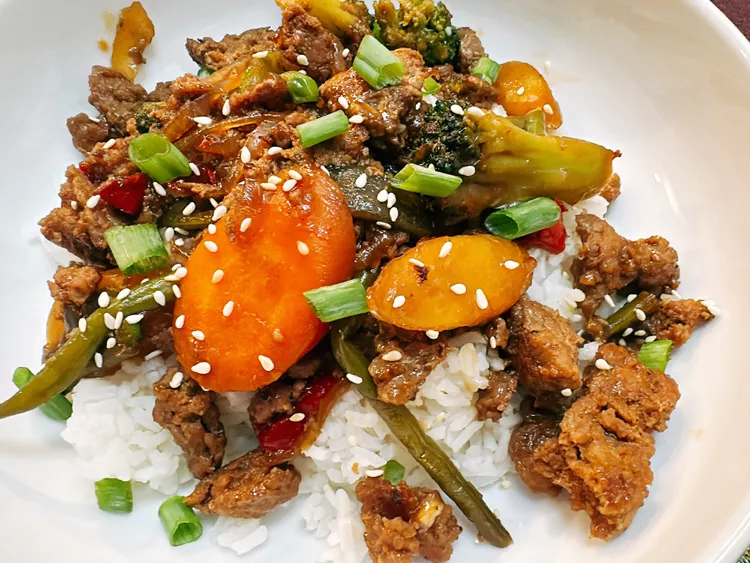

Turkey Teriyaki

Description
Begin this ground turkey stir-fry by making an easy teriyaki stir-fry sauce, then use frozen vegetables
and pre-cooked rice to have dinner ready in no time.
Ingredients
- 1 1/2 tablespoons soy sauce
- 1/4 cup mirin
- 1/4 cup sake
- 3 cloves garlic minced
- 1 teaspoon grated fresh ginger
- 2 tablespoons brown sugar
- 1 teaspoon cornstarch
- 2 teaspoons oil
- 1 small onion, diced
- 2 cups frozen stir fry vegetables, or more to taste
- 2 1/2 cups cooked jasmine rice
- 1/4 cup sliced green onion, or as needed
Directions
- Stir soy sauce, mirin, sake, garlic, ginger, brown sugar, and cornstarch together in a small bowl; set aside.
- Place a skillet over medium high heat. Add oil. Add ground turkey. Allow turkey to brown for 3 to
5 minutes before starting to crumble and break up with a spatula. Add in onions and stir fry vegetables.
Cover and cook for 3 minutes.
- Uncover and add the teriyaki sauce. Cook and stir until sauce thickens, about 3 minutes. Spoon over rice.
Sprinkle sesame seeds and chopped green onions on top.